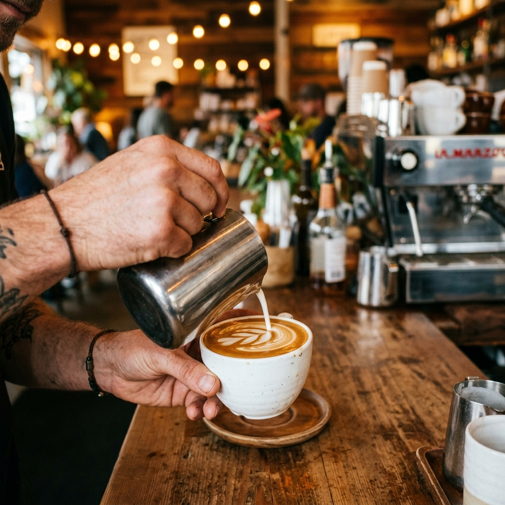
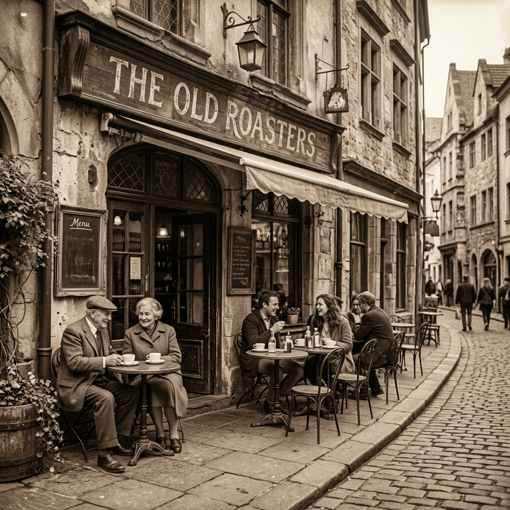

Welcome to Bryan's Café
Your daily dose of exceptional coffee and freshly made meals.
About Us
At Bryan's Café, we believe in the power of a great cup of coffee and a warm, inviting atmosphere. Our baristas are passionate about their craft, sourcing the finest beans and creating masterpieces in every cup. Whether you're here to catch up with friends, find a quiet corner to work, or simply grab your morning fuel, we provide a welcoming space for all our customers.

Our History
Founded over a decade ago, Bryan's Café started as a small coffee cart in the heart of the city. With a commitment to quality and community, we slowly expanded into the multi-branch beloved establishment we are today. We have kept true to our roots, maintaining our original recipes while continuously innovating to bring you the best culinary experiences.
